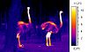

thermoregulation

Definition: Thermoregulation is the ability of an organism to keep its body temperature within certain boundaries, even when the surrounding temperature is very different. A thermoconforming organism, by contrast, simply adopts the surrounding temperature as its own body temperature, thus avoiding the need for internal thermoregulation. The internal thermoregulation process is one aspect of homeostasis: a state of dynamic stability in an organism's internal conditions, maintained far from thermal equilibrium with its environment (the study of such processes in zoology has been called physiological ecology). If the body is unable to maintain a normal temperature and it increases significantly above normal, a condition known as hyperthermia occurs. Humans may also experience lethal hyperthermia when the wet bulb temperature is sustained above 35 °C (95 °F) for six hours. Work in 2022 established by experiment that a wet-bulb temperature exceeding 30.55°C caused uncompensable heat stress in young, healthy adult humans. The opposite condition, when body temperature decreases below normal levels, is known as hypothermia. It results when the homeostatic control mechanisms of heat within the body malfunction, causing the body to lose heat faster than producing it. Normal body temperature is around 37°C(98.6°F), and hypothermia sets in when the core body temperature gets lower than 35 °C (95 °F). Usually caused by prolonged exposure to cold temperatures, hypothermia is usually treated by methods that attempt to raise the body temperature back to a normal range.
Source: Wikipedia
Wikipedia Page (Something wrong with this association? Let us know.)
Wikidata Page (Something wrong with this association? Let us know.)